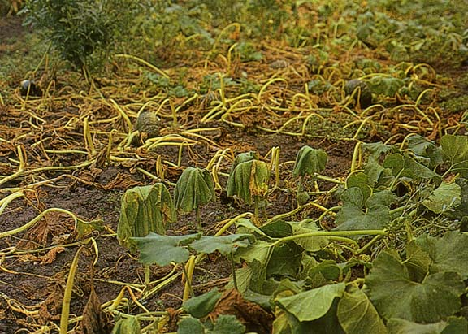

Disease Reference Library
Comprehensive guide to crop diseases, symptoms, and treatments

Powdery Mildew
Moderate Severity
White powdery patches on leaves and stems. Thrives in warm, dry conditions with high humidity.

Rusts
High Severity
Orange-brown pustules on leaves and stems, reducing photosynthetic area. Spreads via spores.

Blight Diseases
Severe
Rapid browning and death of foliage and fruit. Requires proper sanitation and avoiding overhead irrigation.

Bacterial Wilts
Severe
Sudden drooping and blocked water transport. Often soilborne. Requires clean tools and resistant rootstocks.

Mosaic Viruses
Moderate Severity
Mottled leaf patterns, stunting and reduced yields. Spread by insect vectors like aphids and whiteflies.

Root Rot & Damping-Off
High Severity
Attacks roots and seedlings, causing collapse and poor growth. Improve drainage and avoid overwatering.